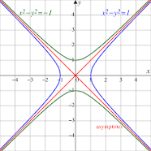
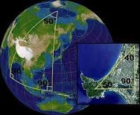
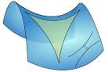
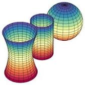
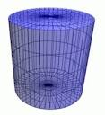
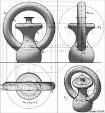

La geometría es la rama de las matemáticas que se centra en el estudio de las propiedades de las líneas, planos, ángulos, formas y las distancias y relaciones entre ellos. Los ejemplos incluyen el cálculo de los ángulos de un triángulo, la longitud de una curva o la superficie de una esfera. Toma cursos gratis de geometría y aprende sobre las propiedades de las figuras y su análisis matemático hoy mismo. Existen muchas aplicaciones de esta ciencia las cuales tendrás la oportunidad de conocer en los próximos párrafos. Continuar leyendo...
Tipos de geometría





